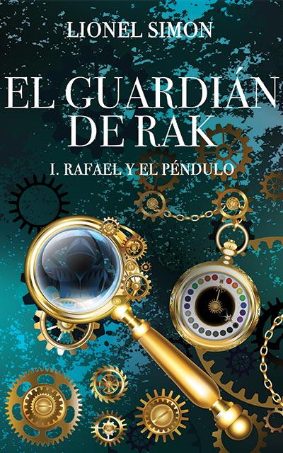
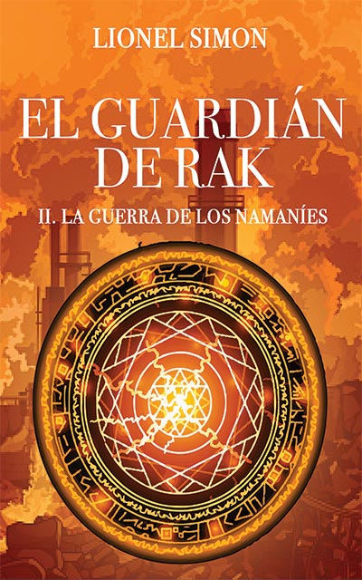
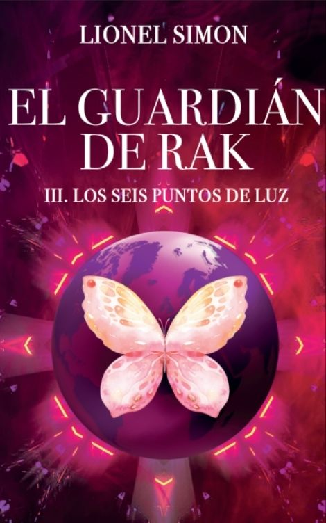
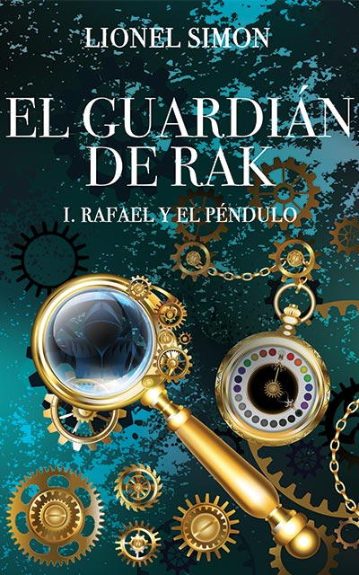
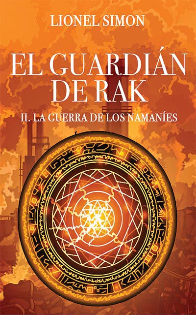
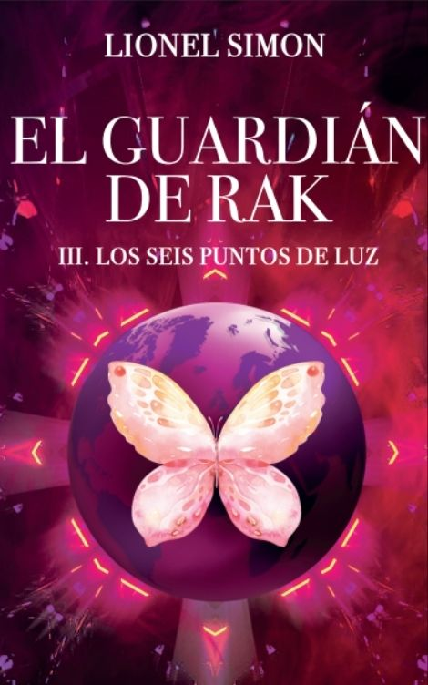

Edición Especial: La Trilogía Completa
El Guardián de RAK
La Trilogía
Rafael, protagonista de la trilogía El guardián de RAK, es un joven huérfano que vive en las afueras de la Barcelona contemporánea y que está a punto de cumplir trece años. A pesar de su fértil imaginación, la curiosidad que siente por el reloj de la casa de su tía le hará descubrir una realidad más increíble que todas las historias jamás inventadas.
Rafael descubrirá que pertenece a las familias de RAK, la esencia de la vida, y que es su guardián. Esa asombrosa revelación viene acompañada de un terrible cometido: Rafael deberá impedir la destrucción del mundo.
Con la ayuda de su mentor y de otros miembros de las familias de RAK, Rafael emprenderá un viaje peligroso durante el que deberá luchar contra sus enemigos. El guardián de RAK, junto con su nueva familia, se embarcará en aventuras en las que necesitará recurrir a todo su ingenio y habilidades, que irá dominando con cada vez más maestría.
Obligado a olvidar su antigua vida y sus primeros años de adolescencia, Rafael deberá manifestar una madurez que le convertirá en el protagonista de un destino marcado desde hace siglos y que le llevará a descubrir la auténtica finalidad de su misión, desconocida hasta por los miembros más destacados de las familias de RAK.
I. Rafael y el Péndulo
El Guardián de RAK
Rafael, un joven huérfano que vive con su tía en las afueras de la Barcelona contemporánea, está a punto de cumplir trece años y se prepara para volver al instituto. A pesar de su fértil imaginación, su curiosidad por el reloj de la casa de su tía le hará descubrir una realidad más increíble que todas las historias jamás inventadas.
Tras varios acontecimientos repentinos y del todo desconcertantes, su tía Marta, a quien considera su propia madre, deberá revelarle que pertenece a las familias de RAK. RAK es la esencia de la vida y Rafael es su guardián. Esa asombrosa revelación viene acompañada de un terrible cometido: Rafael deberá impedir la autodestrucción del mundo. Dotado de habilidades extraordinarias que irá aprendiendo a dominar, Rafael deberá madurar deprisa para enfrentarse al grupo rebelde de las familias de RAK que quiere sumergir el mundo en una oscuridad eterna.
Con la ayuda de su mentor y de otros miembros de las familias de RAK, Rafael emprenderá un viaje peligroso durante el que deberá luchar contra sus enemigos y salvar la vida del último guardián de las virtudes.
II. La Guerra de los Namaníes
El Guardián de RAK
Rafael, junto a su mentor y sus nuevos amigos, se enfrentará a toda la organización namaní y descubrirá sus dotes de estratega para urdir planes y estrategias que permitirán a las familias de RAK aprovechar todas sus oportunidades para debilitar a los hombres de negro.
Las aventuras del joven guardián de RAK le llevarán de nuevo a viajar a distintos rincones del planeta persiguiendo a sus enemigos. La fortaleza y las habilidades de Rafael seguirán siendo su mejor baza para acabar con los hombres de negro, que se mantienen firmes en sus intenciones de aniquilarlo.
Unos acontecimientos imprevistos y la inesperada ayuda de nuevos aliados marcarán una diferencia inestimable en el desempeño de la misión del guardián de RAK.
III. Los Seis Puntos de Luz
El Guardián de RAK
Tras haber descubierto el punto de partida de sus nuevas aventuras gracias a un objeto antiguo, pertenencia de las familias desde hace generaciones, Rafael y sus tres amigos más cercanos se enfrentarán a situaciones imprevistas que requerirán todo su ingenio y sus habilidades para ir descubriendo el objetivo real que se esconde tras cada uno de sus periplos.
Para salir exitosos, deberán lidiar con fuerzas oscuras arraigadas en sitios esparcidos por todo el planeta, además de luchar contra los hombres de negro, que no tienen más objetivo que acabar con la vida del guardián.
Rafael, a pesar de su gran madurez y compromiso absoluto para con su misión, afrontará el momento más difícil de su corta vida tras hallar la auténtica finalidad de su destino como guardián de RAK.
Las Virtudes de RAK
RAK es la esencia de la vida. En su esencia original, es la suma de siete virtudes. !

La Humildad
Es el contrario del Orgullo. Es el principio fundador de una vida en la que en ningún caso y bajo ninguna circunstancia piensas estar por encima de nada en el mundo.

La Generosidad
Es una manera de orientar tus acciones como ser humano. Tus acciones nunca tienen como objetivo tu beneficio personal.


La Justicia
Es sobre todo ser equitativo. Que solamente criterios objetivos intervengan en las conclusiones de tu juicio.

El Perdón
Es tu capacidad a entender las razones y las circunstancias del otro. El Perdón es sobre todo tu capacidad a ofrecer una nueva y real oportunidad sin sesgar tus sentimientos o juicios a las acciones del pasado.

La Esperanza La Nostalgia
Responden a una misma virtud. Si te parece que todo a tu alrededor carece de virtud, la Esperanza es lo que hace que todo puede volver, que todo es de nuevo posible. La Nostalgia es lo mismo. Porque si la humanidad tiene nostalgia significa que añora una época en la que las virtudes estaban presentes. Esa Nostalgia hace también que todo puede volver.

El Respeto
Es el fundamento de la vida. Lo que sobre todo deberás entender por falta de Respeto es el abuso de la autoridad que uno puede tener. Es tomar a su antojo sin preocuparse de los demás y si lo que tomamos es de los demás.
Las Virtudes de RAK
RAK es la esencia de la vida. En su esencia original, es la suma de siete virtudes. !
La Humildad
Es el contrario del Orgullo. Es el principio fundador de una vida en la que en ningún caso y bajo ninguna circunstancia piensas estar por encima de nada en el mundo.
La Generosidad
Es una manera de orientar tus acciones como ser humano. Tus acciones nunca tienen como objetivo tu beneficio personal.
La Justicia
Es sobre todo ser equitativo. Que solamente criterios objetivos intervengan en las conclusiones de tu juicio.
El Perdón
Es tu capacidad a entender las razones y las circunstancias del otro. El Perdón es sobre todo tu capacidad a ofrecer una nueva y real oportunidad sin sesgar tus sentimientos o juicios a las acciones del pasado.
La Esperanza La Nostalgia
Responden a una misma virtud. Si te parece que todo a tu alrededor carece de virtud, la Esperanza es lo que hace que todo puede volver, que todo es de nuevo posible. La Nostalgia es lo mismo. Porque si la humanidad tiene nostalgia significa que añora una época en la que las virtudes estaban presentes. Esa Nostalgia hace también que todo puede volver.
El Respeto
Es el fundamento de la vida. Lo que sobre todo deberás entender por falta de Respeto es el abuso de la autoridad que uno puede tener. Es tomar a su antojo sin preocuparse de los demás y si lo que tomamos es de los demás.
Los lectores hablan
Descubre todas las opiniones en Amazon
Atrapante!
Me ha encantado de principio a fin. Las historia es súper dinámica, entretiene y te deja con ganas de más. La segunda parte pinta que promete! Es un libro fácil de leer, tiene un poco de todo! Esta muy bien la narrativa, te transporta con las descripciones. Recomendable 100% para chicos y grandes!

Mariana M.
Muy recomendable!
Muy bueno! Dirigido a jóvenes lectores pero te engancha tengas la edad que tengas. Muy recomendable
Ruben Lozano
Muy recomendable!
La historia te atrapa desde las primeras líneas y te mantiene intrigado en todo momento, además consigue que te sumerjas en ella. La lectura es muy amena a la par que entretenida. Al acabar el libro te deja con ganas de más. Sin duda, merece la pena leerlo
Marc
GRAN LIBRO!
Es una historia muy bonita, con una intriga que te mantiene expectante desde el principio hasta el final y con una narrativa que hace que la lectura sea muy placentera. Estoy deseando que salgan los otros dos. Lo recomiendo sin ninguna duda.
Marta
Para todas las edades
Una historia diferente y muy entretenida con un mensaje muy bonito ojalá todos vieramos el mundo como lo ve Rafael